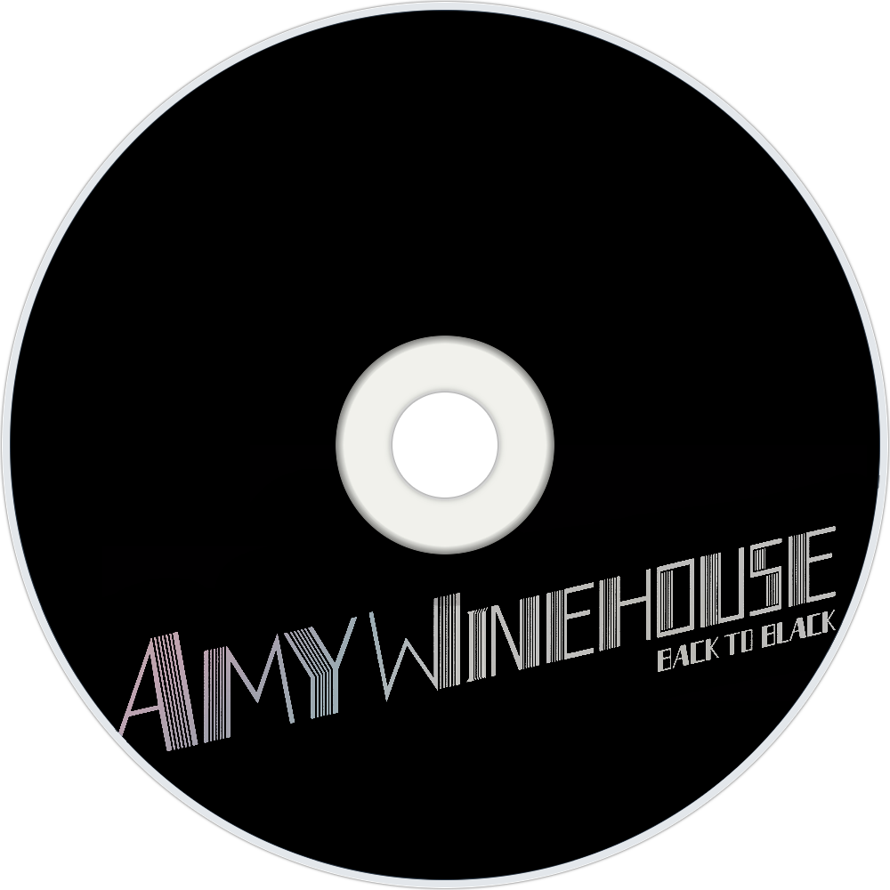
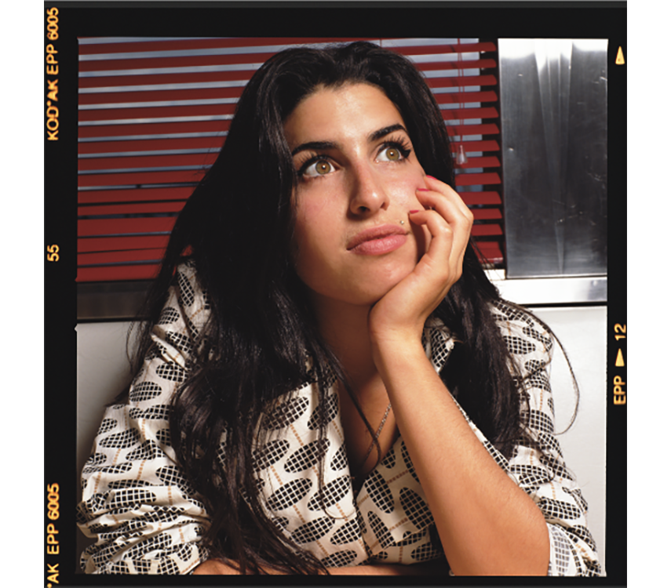

CANCIONES EMBLEMATICAS
Back to Black
"Back to Black" de Amy Winehouse es una emotiva canción de desamor que narra su dolor tras una ruptura, con un estilo soul y jazz melancólico. Fue lanzada en 2006 y es su éxito icónico.
Rehab
"Rehab" de Amy Winehouse es una canción autobiográfica lanzada en 2006, donde rechaza rehabilitación por sus problemas con el alcohol. Su estilo soul y pegajoso la hizo mundialmente famosa.
Valerie
"Valerie" es un éxito de 2007 interpretado por Amy Winehouse y Mark Ronson. Es una versión soul de la banda The Zutons, donde canta sobre extrañar a una ex pareja problemática.